// requirements
Business Requirements
TechCorp HQ has three departments that each need isolated network segments at Layer 2 for security, while still being able to communicate with each other at Layer 3 for day-to-day business operations. All departments also need internet access routed through a single edge router.
| Department | VLAN | Subnet | Gateway |
|---|---|---|---|
| Management | 10 | 192.168.10.0/24 | 192.168.10.1 |
| Engineering | 20 | 192.168.20.0/24 | 192.168.20.1 |
| Finance | 30 | 192.168.30.0/24 | 192.168.30.1 |
| Native/Trunk | 99 | N/A | N/A |
// topology
Network Topology
The network follows a three-tier hierarchical model commonly used in enterprise environments. This model separates the network into distinct layers, each with a specific role, making the design easier to manage, scale, and troubleshoot.
// topology diagram
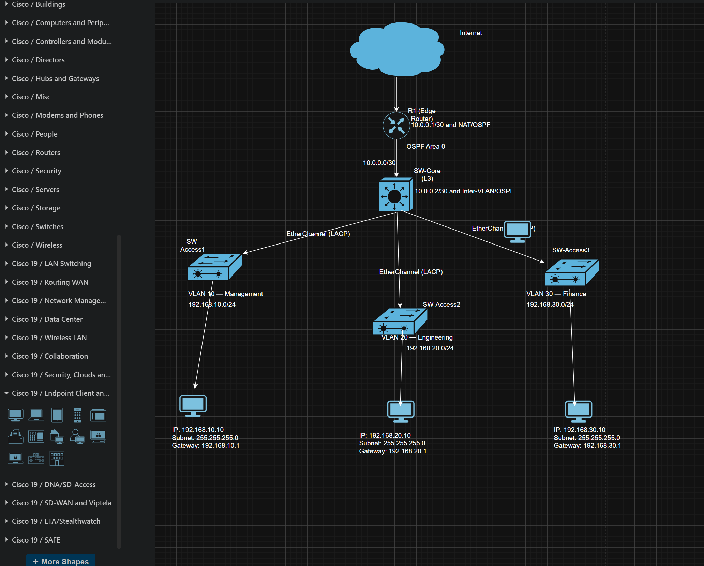
Full topology drawn in Draw.io showing the three-tier hierarchy. R1 sits at the edge connecting to the internet. SW-Core sits at the distribution layer handling inter-VLAN routing and OSPF. Three access switches connect to SW-Core via dual EtherChannel links, each serving one department VLAN. PC0 represents Management (VLAN 10), PC1 represents Engineering (VLAN 20), and PC2 represents Finance (VLAN 30).
Device Roles
- R1 (Cisco 2911): Edge router. Handles NAT/PAT to translate private addresses for internet access and runs OSPF to exchange routes with SW-Core.
- SW-Core (Cisco 3560 Multilayer Switch): Distribution layer. Performs inter-VLAN routing via SVIs, runs OSPF, and connects to all three access switches via EtherChannel bundles.
- SW-Access1, SW-Access2, SW-Access3 (Cisco 2960): Access layer. Pure Layer 2 switches connecting end-user devices to their assigned VLANs. Each uplinks to SW-Core via two physical cables bundled into a single EtherChannel.
- PC0 (192.168.10.10): Management department endpoint on VLAN 10.
- PC1 (192.168.20.10): Engineering department endpoint on VLAN 20.
- PC2 (192.168.30.10): Finance department endpoint on VLAN 30.
Benefits of This Topology
- Department traffic is isolated at Layer 2, reducing broadcast noise and preventing Finance from seeing Engineering packets on the wire.
- Inter-VLAN routing happens inside SW-Core at hardware speed, removing the need for a dedicated router for internal traffic.
- Dual physical links between each access switch and SW-Core, bundled via EtherChannel, provide both redundancy and increased bandwidth without STP blocking any link.
- A single public IP on R1 serves all three departments through NAT/PAT, exactly as real-world corporate gateways operate.
- OSPF dynamic routing means routes are learned automatically. Adding a new subnet in future requires no manual static route updates across all devices.
IP Addressing
| Device | Interface | IP Address | Role |
|---|---|---|---|
| R1 | Gig0/0 | 10.0.0.1/30 | Point-to-point link to SW-Core |
| R1 | Gig0/1 | 203.0.113.1/24 | WAN, internet facing |
| SW-Core | Fa0/7 | 10.0.0.2/30 | Routed uplink to R1 |
| SW-Core | VLAN 10 SVI | 192.168.10.1/24 | Default gateway, Management |
| SW-Core | VLAN 20 SVI | 192.168.20.1/24 | Default gateway, Engineering |
| SW-Core | VLAN 30 SVI | 192.168.30.1/24 | Default gateway, Finance |
| PC0 | Fa0 | 192.168.10.10/24 | Management host |
| PC1 | Fa0 | 192.168.20.10/24 | Engineering host |
| PC2 | Fa0 | 192.168.30.10/24 | Finance host |
// stage 01
VLAN Creation
Created four VLANs on every switch in the network: Management (10), Engineering (20), Finance (30), and Native (99). Applied on SW-Core and all three access switches.
Why It Matters
Without VLANs, every device on every switch shares the same broadcast domain. Every ARP request, every DHCP broadcast, and every announcement from any device reaches every other device on the network. In a company environment this creates unnecessary traffic, degrades performance, and creates security risks. Finance traffic would be visible to Engineering devices at the frame level.
VLANs solve this by creating logical segments. A PC in the Management VLAN only sees broadcasts from other Management devices. VLAN 99 was created as a dedicated native VLAN to move untagged trunk traffic away from the default VLAN 1, which is a well-known vector for VLAN hopping attacks.
// show vlan brief on SW-Core
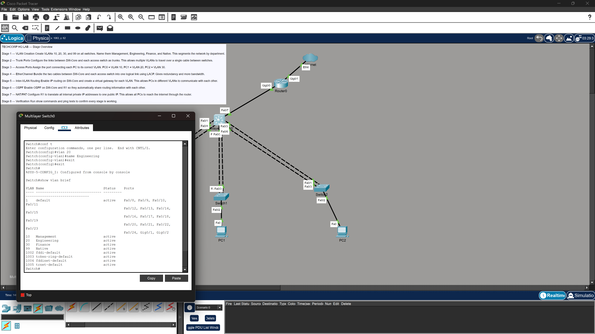
Output of show vlan brief on SW-Core confirming all four VLANs are created and active: VLAN 10 (Management), VLAN 20 (Engineering), VLAN 30 (Finance), and VLAN 99 (Native). Port assignments are not yet shown here because trunk and access port configuration happens in later stages.
// show vlan brief on SW-Access1
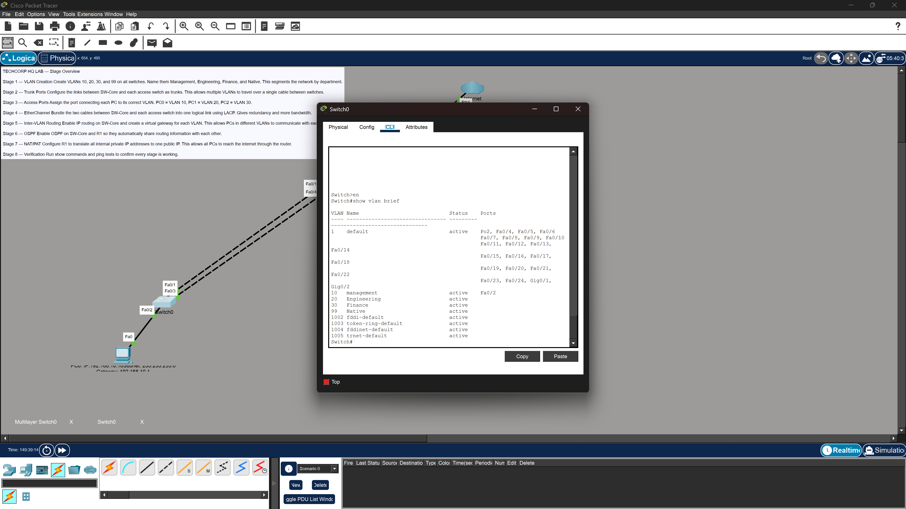
The same VLAN database replicated on SW-Access1. VLANs must exist on every switch in the network, not just the core. Without this, a trunk port receiving a tagged frame for an unknown VLAN would drop it. All four VLANs are confirmed active on this switch.
// show vlan brief on SW-Access2
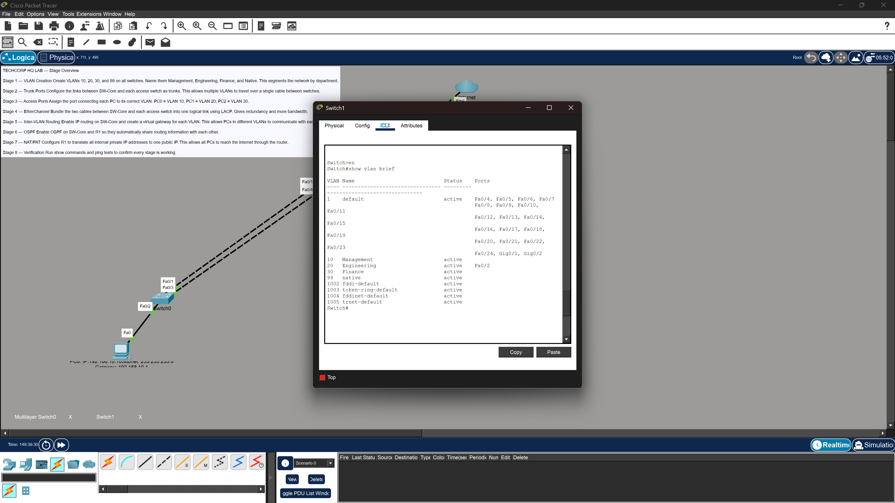
VLAN database on SW-Access2. Consistent VLAN configuration across all switches is essential before configuring trunk ports. Mismatched VLAN databases are a common source of connectivity failures that are easy to miss.
// show vlan brief on SW-Access3
VLAN database on SW-Access3, the third access switch serving the Finance department. All four VLANs confirmed present and active before proceeding to trunk configuration.
// stage 02
Trunk Ports (802.1Q)
Configured the uplink ports between SW-Core and each access switch as 802.1Q trunk ports on both ends of every link. Every trunk was set to allow VLANs 10, 20, 30, and 99 with native VLAN 99 on all trunk ports.
Why It Matters
A standard access port carries only one VLAN. If the uplinks between SW-Core and the access switches were left as access ports, only one VLAN's traffic could cross them, completely defeating the purpose of VLAN segmentation. Trunk ports solve this using 802.1Q tagging. As a frame crosses a trunk link, the switch inserts a 4-byte VLAN tag identifying which VLAN the frame belongs to. The receiving switch reads the tag and forwards the frame into the correct VLAN. All three department VLANs can share a single physical cable between switches.
Troubleshooting: Native VLAN Mismatch
Error: %CDP-4-NATIVE_VLAN_MISMATCH
SW-Core was configured with native VLAN 99 but the access switches still had the default native VLAN 1. Both ends of a trunk must agree on the native VLAN or CDP raises this warning and untagged frames are handled incorrectly. Fix: apply native VLAN 99 on all access switch uplink ports as well. Trunk configuration is always a two-sided commitment.
// native vlan mismatch warning
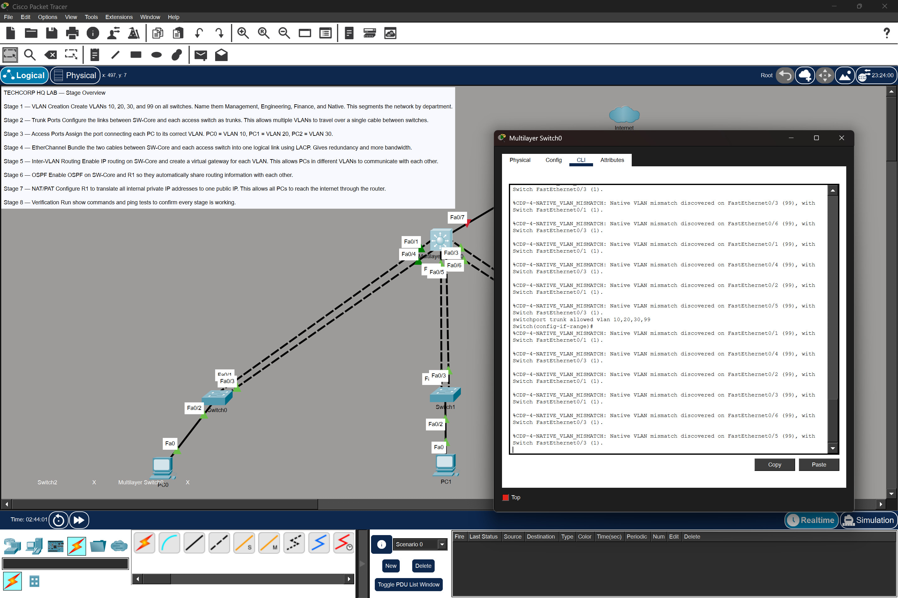
CDP warning appearing on SW-Core after trunk ports were configured on one side only. The error identifies which interface has the mismatch and which VLAN each side expects. This pinpointed the root cause immediately and directed the fix to the access switch uplinks.
// show interfaces trunk on SW-Core
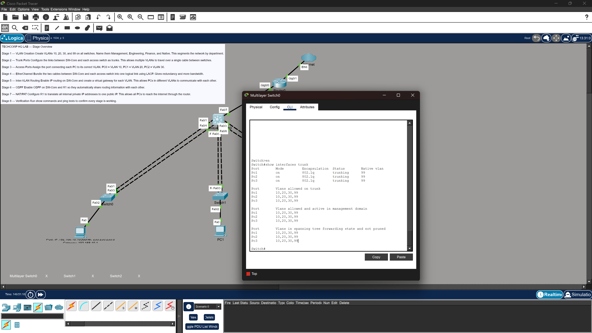
Output of show interfaces trunk on SW-Core after the mismatch was resolved. All trunk ports show native VLAN 99, allowed VLANs include 10, 20, 30, and 99, and all VLANs are in spanning tree forwarding state. This confirms trunking is working correctly on all uplinks.
// stage 03
Access Port Assignment
Assigned the PC-facing port on each access switch to its correct department VLAN. PC0 on SW-Access1 was assigned to VLAN 10. PC1 on SW-Access2 was assigned to VLAN 20. PC2 on SW-Access3 was assigned to VLAN 30. Each access port was configured as a non-trunk port belonging to exactly one VLAN.
Why It Matters
Access ports connect end devices to the network. Unlike trunk ports that carry multiple VLANs, an access port belongs to exactly one VLAN. When a frame arrives on an access port, the switch stamps it with that port's VLAN membership. Without this step, all PCs would sit on VLAN 1 by default with no connectivity to the correct department subnets. This step is what actually places each end device into its logical network segment.
// access port assignment on SW-Access1
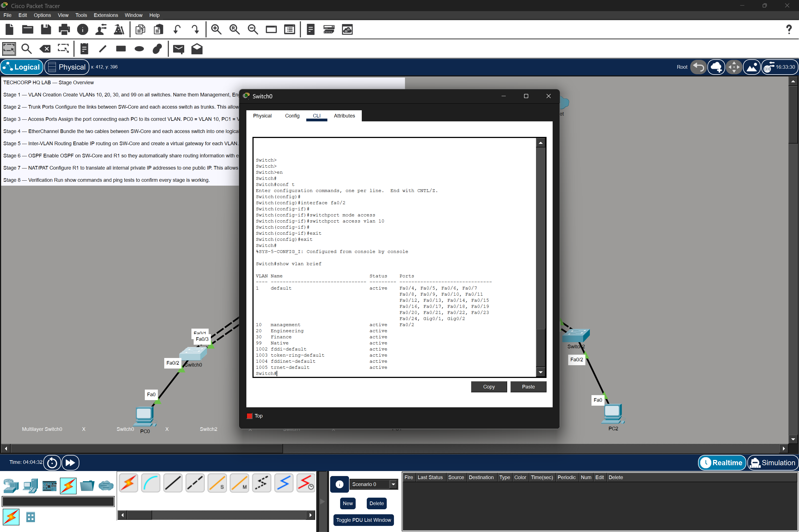
Output of show vlan brief on SW-Access1 after access port assignment. The PC-facing port now appears under VLAN 10 (Management), confirming that PC0 will be logically placed in the Management network segment. Trunk ports to SW-Core do not appear here because trunk ports are excluded from vlan brief output.
// stage 04
EtherChannel (LACP)
Bundled the two physical cables between SW-Core and each access switch into single logical port channel interfaces using LACP active mode on both sides. Three port channels were created: Port-channel 1 connects SW-Core to SW-Access1, Port-channel 2 to SW-Access2, and Port-channel 3 to SW-Access3. Each port channel was configured as a trunk carrying VLANs 10, 20, 30, and 99 with native VLAN 99.
Why It Matters
Having two separate physical links between switches without EtherChannel creates a loop. Spanning Tree Protocol detects this and blocks one of the links to prevent broadcast storms, leaving one cable completely idle with no bandwidth benefit and no active redundancy. EtherChannel solves both problems at once. STP sees the bundle as a single logical link and does not block it. Both cables actively carry traffic, effectively doubling the bandwidth between switches. If one cable fails, the other continues with no downtime and no reconvergence delay. LACP was chosen because it is the open IEEE 802.3ad standard, compatible across multi-vendor environments unlike Cisco's proprietary PAgP.
Troubleshooting: Multiple Issues Encountered
CANNOT_BUNDLE2: VLAN Mask Mismatch
Ports were added to channel groups before trunk configuration was applied to the physical interfaces. The port channel inherits its configuration from member ports, not the other way around. Fix: configure trunk encapsulation and allowed VLANs on physical interfaces first, then assign them to the channel group.
Suspended Ports: LACP Not Negotiating
Configuration was applied to only one side of the bundle at a time. LACP times out waiting for the remote end to respond. Fix: configure both sides in quick succession so LACP can complete negotiation before the timer expires.
Administratively Disabled Interfaces
Fa0/1 and Fa0/4 on SW-Core were in a shutdown state. Port-channel 1 remained down despite full configuration because its member ports were disabled. Running no shutdown on both interfaces resolved the issue.
// etherchannel summary during troubleshooting
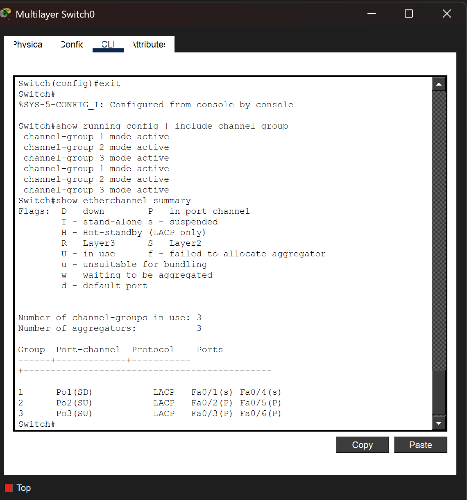
Output of show etherchannel summary during active troubleshooting. Port-channel 1 shows the (SD) flag indicating the bundle is suspended and down. Member ports show flags indicating they are not yet bundled. This screenshot captures the diagnostic state before the disabled interfaces and LACP negotiation issues were identified and resolved.
// etherchannel summary after full resolution
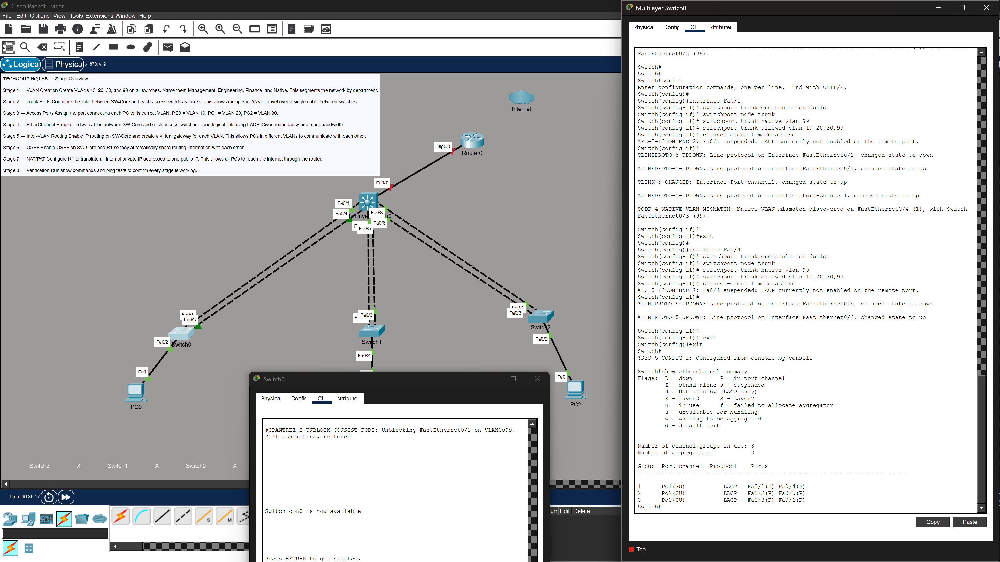
Final output of show etherchannel summary after all three issues were resolved. All three port channels (Po1, Po2, Po3) show the (SU) flag confirming Layer 2 and in use. All member ports show the (P) flag confirming they are bundled and actively carrying traffic. This confirms successful LACP negotiation across all three uplinks from SW-Core to the access layer.
// stage 05
Inter-VLAN Routing (SVIs)
Enabled IP routing on SW-Core and created a Switched Virtual Interface for each department VLAN. Each SVI was assigned the gateway IP for its VLAN and brought up with no shutdown. Static IP addresses were then assigned to each PC with their respective SVI as the default gateway. PC0 was assigned 192.168.10.10 with gateway 192.168.10.1. PC1 was assigned 192.168.20.10 with gateway 192.168.20.1. PC2 was assigned 192.168.30.10 with gateway 192.168.30.1.
Why It Matters
VLANs are isolated by design. A PC in VLAN 10 cannot natively send traffic to a PC in VLAN 20 because they are in different broadcast domains and different IP subnets. Without inter-VLAN routing, Finance could not communicate with Engineering, and Management could reach no one outside its own VLAN.
SVIs are virtual Layer 3 interfaces that live inside the multilayer switch. When a PC sends traffic destined for another VLAN, it forwards the packet to its default gateway, which is the SVI. SW-Core looks up the destination subnet in its routing table and forwards the packet into the correct VLAN at hardware speed. This Layer 3 switching approach is far more efficient than the older router-on-a-stick method, which requires traffic to leave the switch, travel to a physical router, and return on the same link.
// SVI configuration on SW-Core
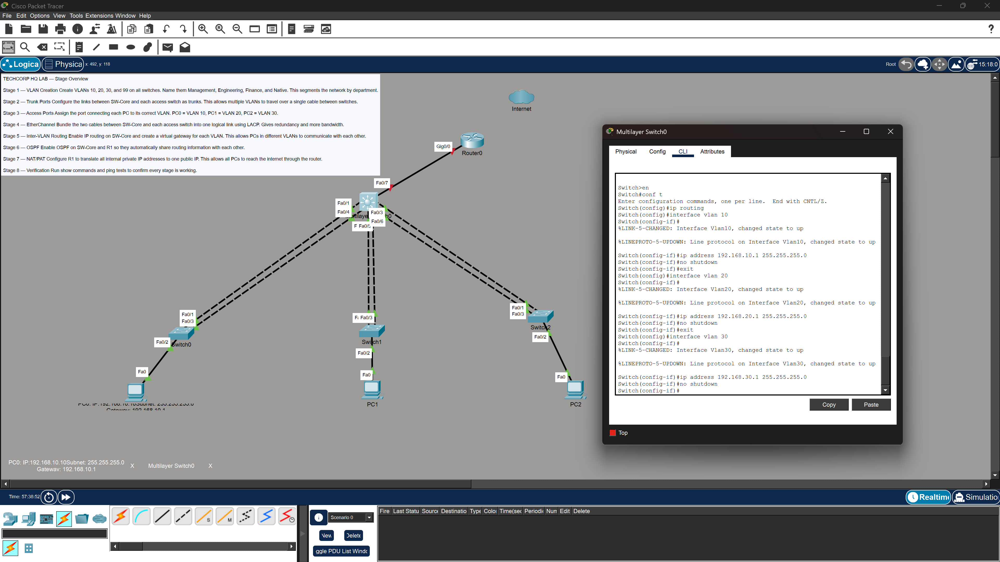
SVI configuration on SW-Core showing all three VLAN interfaces (VLAN 10, 20, 30) with their assigned gateway IPs, each confirmed as up/up. The ip routing command is also visible here. This is the command that enables Layer 3 forwarding on the multilayer switch. Without it, the SVIs exist but the switch will not route between them.
// PC0 static IP configuration

Static IP configuration on PC0 showing the assigned address 192.168.10.10, subnet mask 255.255.255.0, and default gateway 192.168.10.1, pointing to the VLAN 10 SVI on SW-Core. This tells PC0 where to forward traffic destined for networks outside its own subnet.
// inter-VLAN ping test from PC0
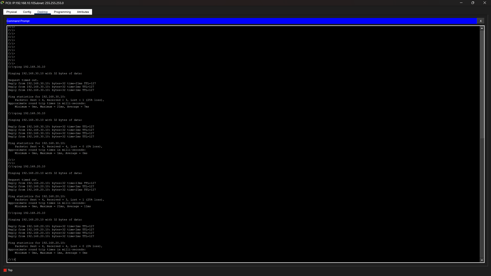
Successful pings from PC0 (192.168.10.10) to PC1 (192.168.20.10) and PC2 (192.168.30.10), confirming inter-VLAN routing is working correctly. Traffic is crossing VLAN boundaries through the SVIs on SW-Core. This is the first major connectivity milestone of the lab, confirming all three departments can communicate with each other.
// stage 06
OSPF Dynamic Routing
Configured a routed point-to-point link between SW-Core and R1 using the /30 subnet 10.0.0.0/30. SW-Core's Fa0/7 was converted from a switchport to a routed interface using the no switchport command. Both devices were configured with OSPF process 1 in Area 0. R1 was configured to advertise a default route to SW-Core using default-information originate.
Why It Matters
Without a routing protocol, SW-Core and R1 only know about their directly connected networks. SW-Core has no path to the internet. R1 has no knowledge of the three VLAN subnets behind it. Static routes could solve this but they do not scale. Every new subnet would require a manual update on every device in the network.
When R1 and SW-Core form an OSPF neighbor relationship, they automatically exchange routing information. R1 learns all three VLAN subnets. SW-Core learns the default route from R1, directing all unknown destination traffic toward the internet. A /30 subnet was used for the point-to-point link because it provides exactly two usable host addresses with no wasted space. This is standard practice for router-to-router links in enterprise networks.
Troubleshooting: Default Route Not Propagating
Gateway of Last Resort Not Set on SW-Core
SW-Core showed "gateway of last resort is not set" even after OSPF was fully configured. The root cause was that R1 had no default route of its own to advertise. The default-information originate command only works if R1 itself has a default route in its routing table. Fix: add a static default route on R1 pointing toward the ISP gateway first, then OSPF advertises it to SW-Core.
// OSPF configuration on SW-Core
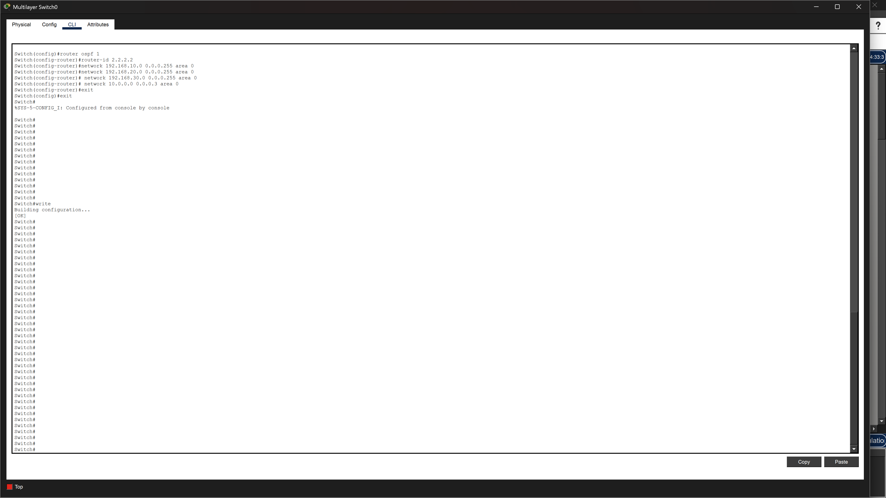
OSPF configuration on SW-Core showing process 1 in Area 0. The network statements advertise the three VLAN subnets and the point-to-point link subnet into OSPF. Advertising these networks makes SW-Core share them with R1 so R1 knows how to route return traffic back to internal hosts from the internet.
// OSPF configuration on R1
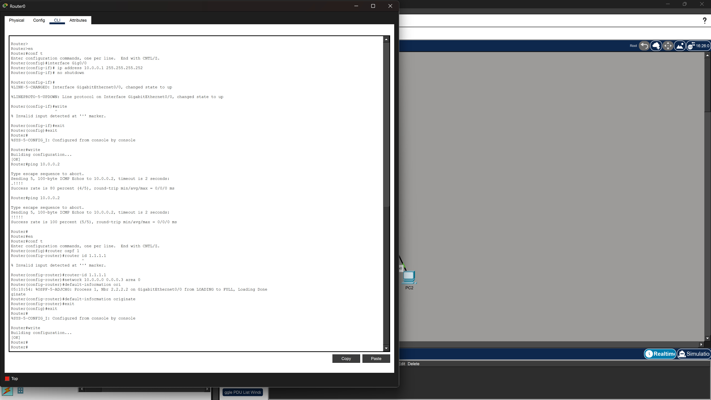
OSPF configuration on R1 showing process 1 in Area 0 with the default-information originate command visible. The static default route pointing to the ISP gateway is also configured here, which is the prerequisite for default-information originate to function. Without the static default route on R1, this command produces nothing to advertise.
// OSPF neighbor adjacency
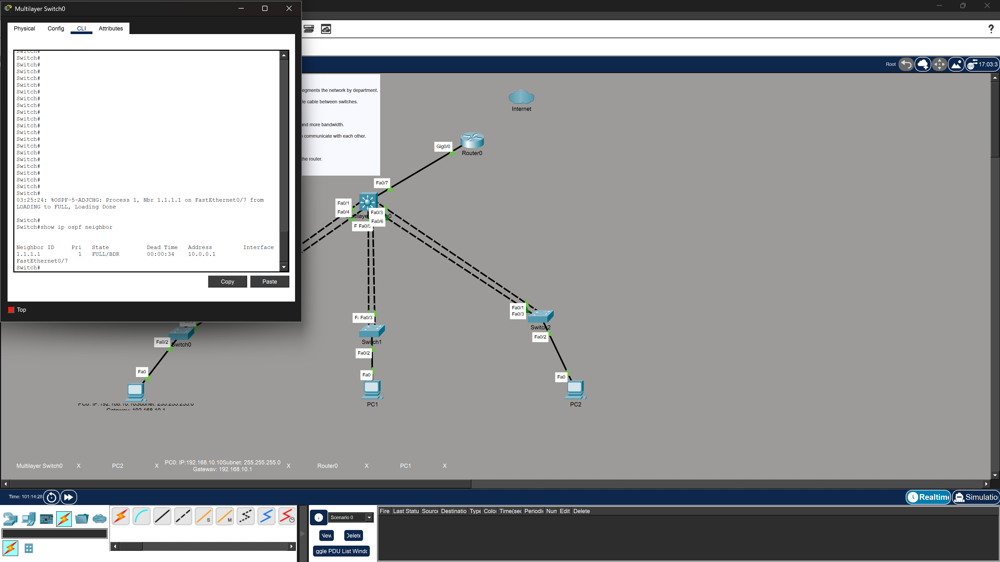
Output of show ip ospf neighbor confirming the OSPF neighbor relationship between R1 and SW-Core has reached the FULL state. FULL is the target state in OSPF, meaning both routers have successfully exchanged their link-state databases and have an identical view of the network. Any state other than FULL indicates a problem with the adjacency.
// routing table on SW-Core

Routing table on SW-Core showing the O*E2 default route learned from R1 via OSPF. The O*E2 designation means this is an OSPF external type 2 route, which is exactly what default-information originate produces. The gateway of last resort is now set to 10.0.0.1, meaning SW-Core will forward all traffic with unknown destinations toward R1 and out to the internet.
// routing table on R1

Routing table on R1 showing all three VLAN subnets (192.168.10.0, 192.168.20.0, 192.168.30.0) learned via OSPF, each marked with the O designation. This confirms R1 knows how to reach every internal department subnet. Without these routes, R1 would drop return traffic from the internet because it would have no forwarding path for it.
// stage 07
NAT / PAT
Configured Port Address Translation on R1 to allow all internal hosts across all three VLANs to reach the internet using R1's single public IP (203.0.113.1). A standard ACL defined which internal networks are eligible for translation. NAT overload was applied to the WAN interface. Both the LAN-facing and WAN-facing interfaces were tagged as inside and outside respectively.
Why It Matters
The three VLAN subnets use RFC 1918 private address space (192.168.x.x). These addresses are not routable on the public internet. Any ISP will drop a packet arriving with a private source address. NAT translates private source addresses to the router's public IP as packets leave the network. R1 tracks each active connection in a translation table, mapping the internal host's private IP and port to the public IP and a unique port number. When return traffic arrives, R1 consults the table and forwards it to the correct internal host.
PAT extends basic NAT by using unique port numbers to differentiate thousands of simultaneous connections from different internal hosts, all sharing the same single public IP. This is exactly how home routers and corporate gateways work in the real world.
// NAT configuration on R1
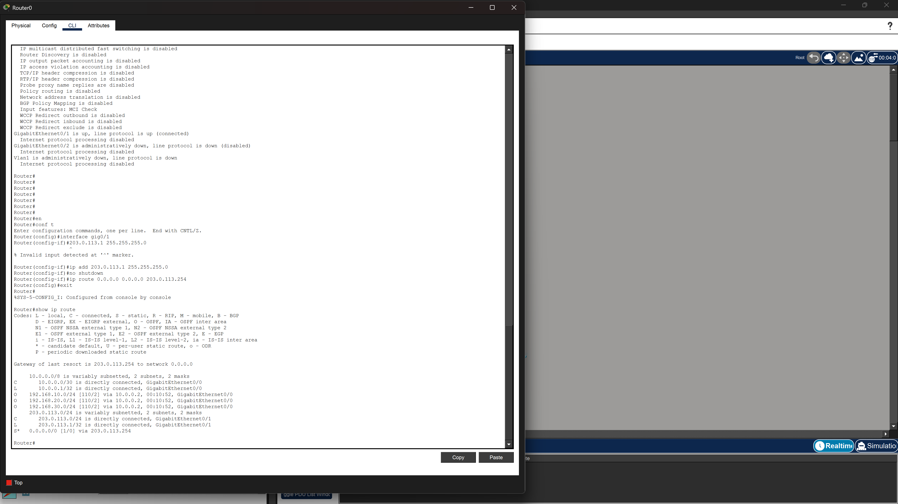
NAT configuration on R1 showing the ACL defining eligible internal networks, the ip nat inside source list command applying overload (PAT) to the WAN interface, and both interfaces tagged with ip nat inside and ip nat outside. Getting the inside/outside tags on the correct interfaces is critical. Reversing them is a common mistake that causes NAT to silently fail with no error message.
// final end-to-end ping from PC0 to internet
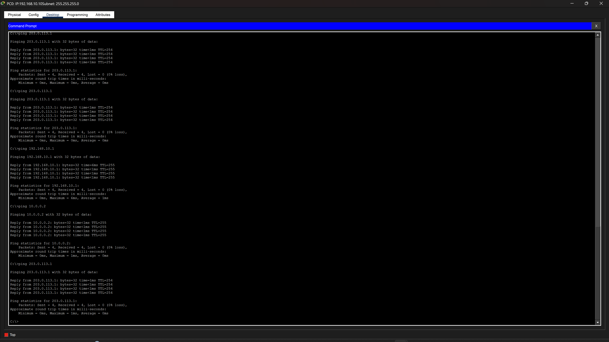
Successful ping from PC0 (192.168.10.10) to the simulated internet address 203.0.113.1. The TTL value in the reply is 254, decreased by exactly one hop from the starting value of 255. This decrement is proof that traffic passed through R1 and was translated by NAT before reaching the destination. A TTL of 255 would indicate no translation occurred. This is the final end-to-end connectivity confirmation for the entire lab.
// stage 08
Final Verification Matrix
Every connectivity path in the network was tested and confirmed working. The table below summarises the full test matrix.
| Source | Destination | Result |
|---|---|---|
| PC0 (192.168.10.10) | PC1 (192.168.20.10) | ✓ Success |
| PC0 (192.168.10.10) | PC2 (192.168.30.10) | ✓ Success |
| PC0 | VLAN 10 Gateway (192.168.10.1) | ✓ Success |
| PC0 | SW-Core uplink (10.0.0.2) | ✓ Success |
| PC0 | R1 LAN interface (10.0.0.1) | ✓ Success |
| PC0 | Internet (203.0.113.1) | ✓ Success |
| OSPF | R1 and SW-Core Adjacency | ✓ FULL |
| EtherChannel | Po1, Po2, Po3 | ✓ SU and P |
// skills demonstrated
Skills Demonstrated
// tools used
Tools
// references